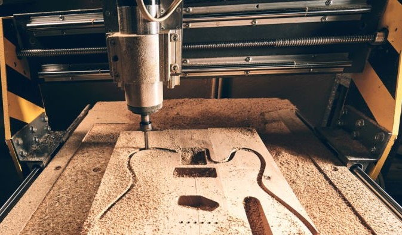
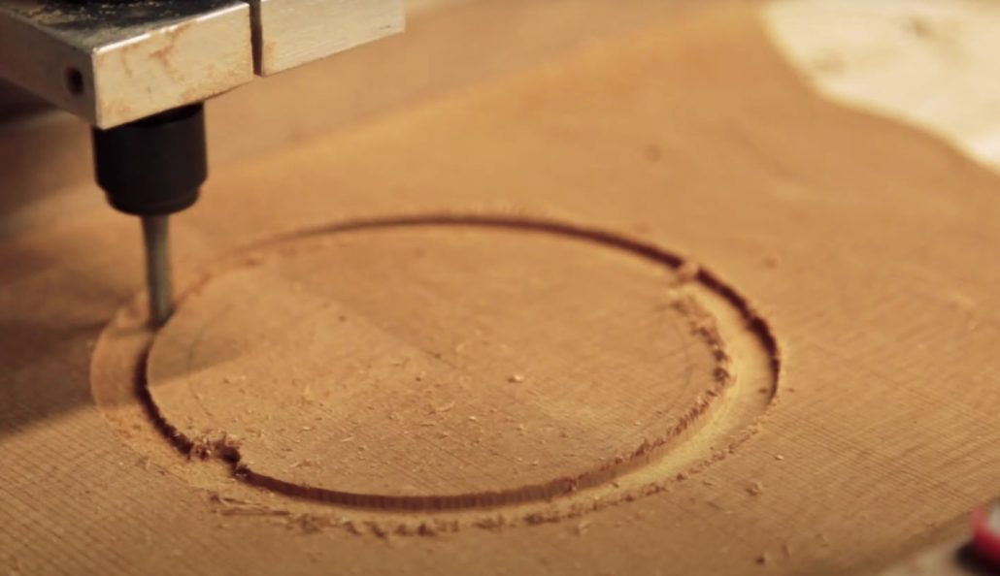
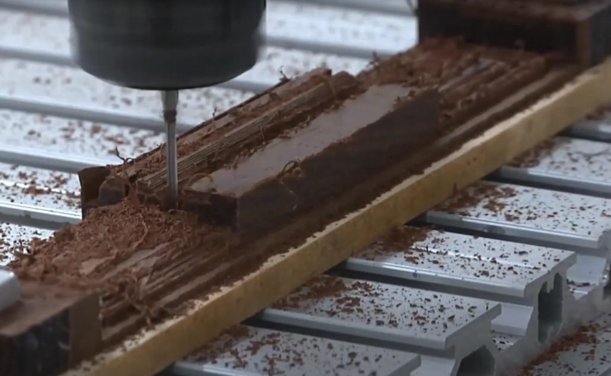
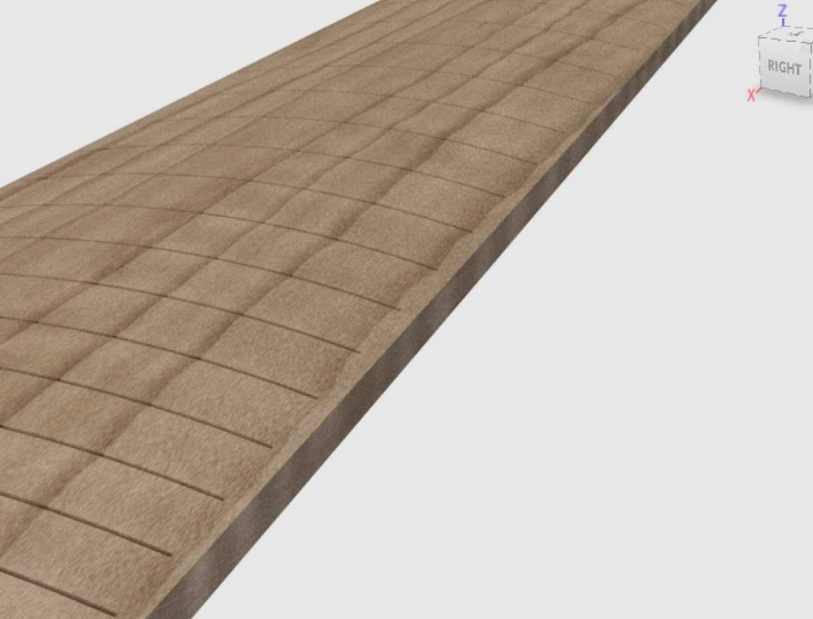

Vivimos un momento fascinante en la historia de la luthería. Los avances tecnológicos han puesto al alcance de un luthier independiente herramientas que hace apenas unas décadas parecían exclusivas de grandes fábricas. Entre ellas, las máquinas CNC (Control Numérico por Computadora) se han convertido en un recurso cada vez más presente en talleres pequeños. Y aunque muchas veces se asocian con la producción en masa, lo cierto es que también pueden tener un papel clave en la construcción de guitarras únicas, personalizadas y llenas de identidad.
En este artículo quiero reflexionar sobre su uso en la luthería individual, no como sustituto del trabajo artesanal, sino como una extensión de la mano, una herramienta que potencia la creatividad y mejora la precisión.

Precisión al servicio de la música
Uno de los mayores atractivos de la CNC es la precisión milimétrica que ofrece. En un oficio donde una décima de milímetro puede marcar la diferencia en la comodidad del mástil o en el ajuste de los trastes, disponer de una herramienta capaz de repetir medidas exactas es un lujo.
No se trata de mecanizar el alma del instrumento, sino de garantizar que ciertas partes críticas —como el corte del diapasón, el ranurado de los trastes o la simetría de un cuerpo— partan de una base sólida y fiable.
Esto permite al luthier dedicar más energía a lo que realmente importa: la selección de maderas, el ajuste fino, la estética, la expresión artística. Cuando los procesos básicos de precisión están asegurados, el espacio mental se abre para la creatividad.
CNC, Personalización sin límites
Si en las fábricas la CNC es sinónimo de uniformidad, en un taller individual ocurre lo contrario. Aquí la máquina no está programada para producir miles de copias idénticas, sino para ejecutar ideas únicas.
Un luthier puede diseñar un clavijero exclusivo, una roseta con formas imposibles de tallar a mano, o incluso incrustaciones que mezclen geometría precisa con materiales exóticos. La CNC se convierte en un pincel digital que amplía el abanico de posibilidades artísticas.

Es precisamente en la personalización donde estas máquinas muestran su verdadero valor en la luthería artesanal. No para clonar guitarras, sino para dar forma a la visión particular de un cliente o de un creador. Cada diseño puede programarse desde cero, adaptarse al proyecto y repetirse con coherencia en caso de necesidad, sin perder su esencia única.
Tiempo y energía para lo esencial
La construcción de una guitarra es un proceso largo y minucioso. Muchas de las horas se consumen en tareas repetitivas o de alto desgaste físico, como el desbaste de un mástil o el vaciado de una caja. La CNC puede asumir parte de este trabajo pesado y liberar al luthier para que invierta su energía en los aspectos más delicados: el barnizado, la selección de las vetas, el ajuste de la acción o el equilibrio acústico.
Esto no significa renunciar a la tradición, sino administrar mejor el tiempo y la energía. En cierto sentido, es comparable a la evolución que supuso la llegada de las herramientas eléctricas hace un siglo. Nadie duda de que un cepillo eléctrico ahorra esfuerzo frente a uno manual, y sin embargo, el resultado final sigue dependiendo de la mano del artesano. Lo mismo ocurre con la CNC: la diferencia no está en la herramienta, sino en la intención con que se utiliza.

El miedo a la pérdida del “alma”
Uno de los argumentos más repetidos en contra de la CNC en la luthería artesanal es que “mata el alma” del instrumento. La crítica sostiene que si una máquina interviene en la construcción, la guitarra pierde esa energía especial que solo la mano humana puede transmitir.
Pero aquí es donde conviene matizar: ¿acaso una guitarra es menos viva porque sus trastes fueron cortados con precisión láser en lugar de con una sierra manual? ¿Pierde su magia porque el cuerpo fue rebajado con ayuda de un CNC en lugar de un formón?
La esencia de un instrumento no reside únicamente en la herramienta, sino en el conjunto de decisiones del luthier: qué maderas usar, cómo orientar la veta, qué grosor dejar en la tapa, cómo ajustar la tensión de las cuerdas. La máquina no decide nada de eso. La máquina obedece. El alma sigue estando en las manos, en los oídos y en la sensibilidad de quien construye.
Puedes descubrir más en mi canal de YouTube.
El conocimiento técnico como liberación
Lo más interesante de integrar una CNC en la luthería individual no es la máquina en sí, sino el aprendizaje que exige. Para programarla, el luthier debe pensar en tres dimensiones, anticipar tensiones, entender cómo cada curva influye en la resonancia. En otras palabras, obliga a profundizar en el conocimiento técnico.
Y cuanto mayor es el dominio técnico, más espacio queda para la intuición. El luthier que comprende a fondo las vibraciones estructurales puede arriesgar más en el diseño, experimentar con formas nuevas, jugar con la acústica sin miedo a perderse. La CNC se convierte entonces en un aliado para liberar creatividad, no para limitarla.

Una herramienta, no un fin
La clave está en no confundir la herramienta con el resultado. La CNC, al igual que un cepillo, una gubia o un barniz, es solo un medio. Puede ser usada de forma industrial para producir miles de guitarras idénticas, o puede ser empleada en un pequeño taller para dar vida a una obra irrepetible.
El valor de una guitarra artesanal no radica en cuántas horas de serrucho hay detrás, sino en la intención, la visión y el cuidado que impregna cada decisión. Si la CNC ayuda a que esa visión se materialice con mayor precisión y libertad, entonces su lugar en la luthería individual no solo es válido, sino necesario.
Tradición y modernidad de la mano
La luthería nunca ha sido estática. A lo largo de los siglos, los constructores de instrumentos han incorporado nuevas técnicas, materiales y herramientas. Lo importante siempre ha sido el equilibrio entre tradición y modernidad.
La CNC, en este sentido, no es una amenaza, sino una oportunidad. Una forma de ampliar el horizonte creativo sin renunciar a la esencia artesanal.
En última instancia, la guitarra sigue siendo un puente entre el creador y el músico, entre la madera y la emoción. Y mientras esa conexión siga viva, no importará si una parte del proceso fue realizada con formón, gubia o CNC. Lo que realmente importa es que, al tomarla entre las manos, el instrumento respire música.

Luthier artesanal en Los Alcázares (Murcia). Construye guitarras personalizadas e instrumentos de folclore en Vael de Ginés.